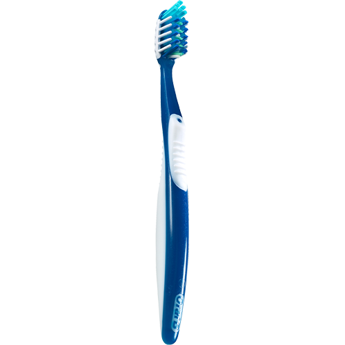

Wat is Progressive Enhancement?
Progressively Enhancement (PE) is een manier van denken over de content en gebruik van je website. Het kan door verschillende soorten mensen op verschillende soorten devices gebruikt worden. Als ontwikkelaar van de website gaat het om het principe dat je denkt vanuit de content. Dat is de eerste van de drie lagen waaruit een website bestaat. Dan ga je vanaf daar door naar de tweede laag; de vormgeving. En later naar de laatste, derde laag; de interactie. Bij PE gaat het erom dat je bij elke laag stilstaat en nadenkt hoe je deze laag gaat ontwikkelen. Welke features heeft deze laag en hoe kan je het zo ontwikkelen dat het echt voor iedereen toegankelijk is.

Als ontwikkelaar wil je dat iedereen jouw site (gemakkelijk) kan gebruiken. Daarbij moet je als ontwikkelaar dan ook zeer letten op dat jouw website in elke browser èn op elk device toegankelijk is voor iedereen. PE is geen standaard lijstje met regels, maar een manier van denken over dat je website toegankelijk moet zijn voor ie-de-reen.
Voorbeelden
Web fonts Weblettertypen zijn geweldig, maar wanneer de gebruiker zich op een traag netwerk met een zware site bevindt, verslechtert dit zeker de gebruikerservaring. Zelfs in deze situatie moet het systeemlettertype worden gebruikt als terugval om inhoud weer te geven. Inhoud weergeven is beter dan wachten op weblettertypen of niets op je scherm krijgen.
Initial HTML Sites zijn geladen met script. Het kan Angular, React of een ander raamwerk zijn. Wanneer deze scripts verantwoordelijk zijn voor de initiële weergave van inhoud, ziet de gebruiker de lege pagina in de browser of het apparaat wanneer er iets mis is gegaan met scripts of wanneer de gebruiker zich op het trage netwerk bevindt. Het is altijd goed om te overwegen om initiële inhoud uit HTML te laden om een betere gebruikerservaring te bieden, in plaats van volledig te vertrouwen op scripts die nog geladen moeten worden.
Lagen
Functioneel: Belangrijk om te beginnen met semantisch correcte HTML, zodat de gebruiker altijd zijn of haar taak kan voltooien en niet op een pagina met fouten terechtkomt.
Bruikbaar: zorg ervoor dat je extra stijl toevoegt aan een ontwerp in browsers die deze functies aankunnen. Hierdoor zijn gebruikers meer geïnteresseerd en wordt de website aantrekkelijker.
Gebruiksvriendelijk: deze laag richt zich op de gebruikerservaring. In dit stadium kun je javascript en allerlei animaties toevoegen die meer voldoening geven en gebruikers het leuk vinden om de website te bezoeken.
Metafoor

Een elektrische tandenborstel is natuurlijk mooi spul. Je hoeft weinig tot geen inspanning te leveren om je tanden lekker schoon te krijgen
Maar wat gebeurt er wanneer je elektrische tandenborstel kapot gaat????
De elektrische tandenborstel blijft te gebruiken, alleen niet meer elektrisch... Je zal nu misschien wel inspanning moeten leveren om je tanden schoon te krijgen maar het is mogelijk!